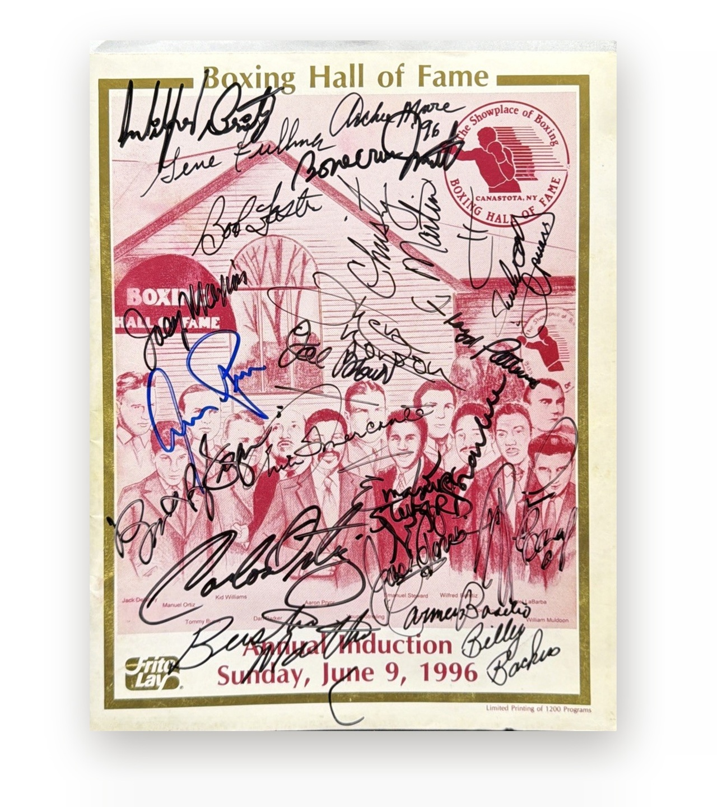
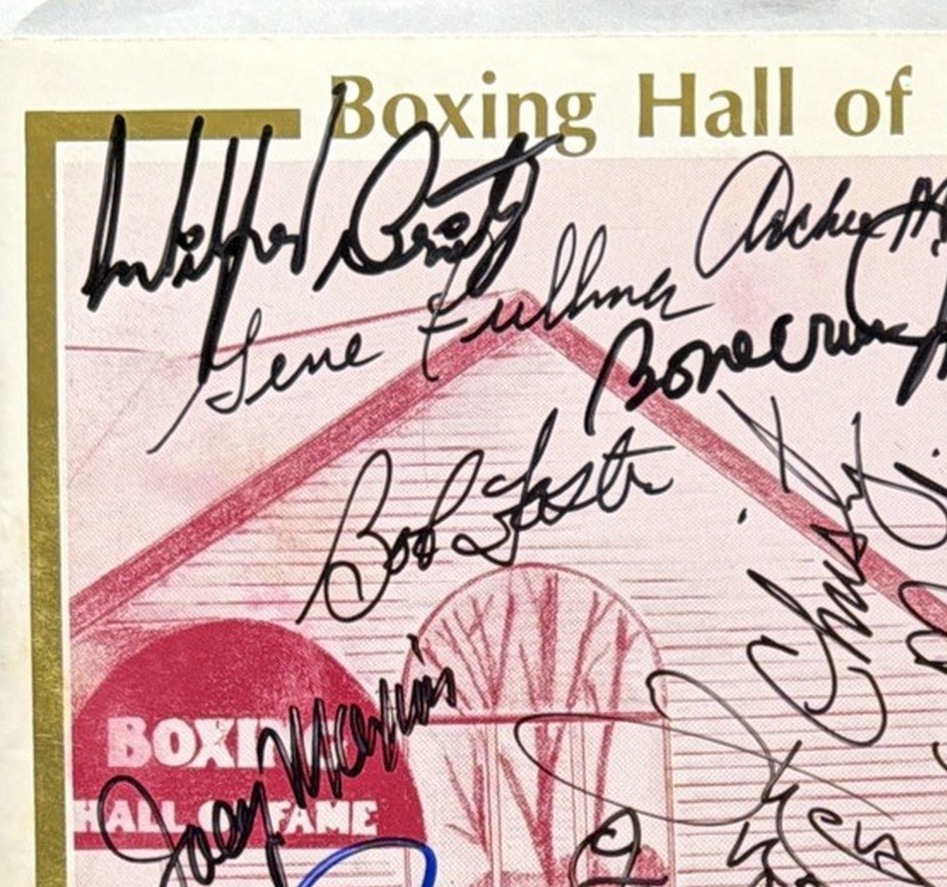
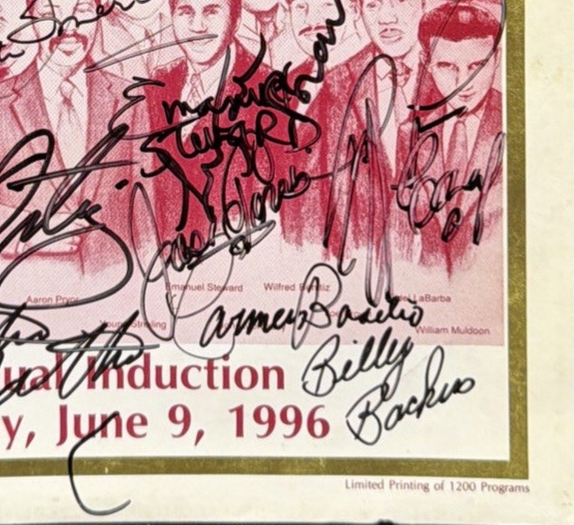
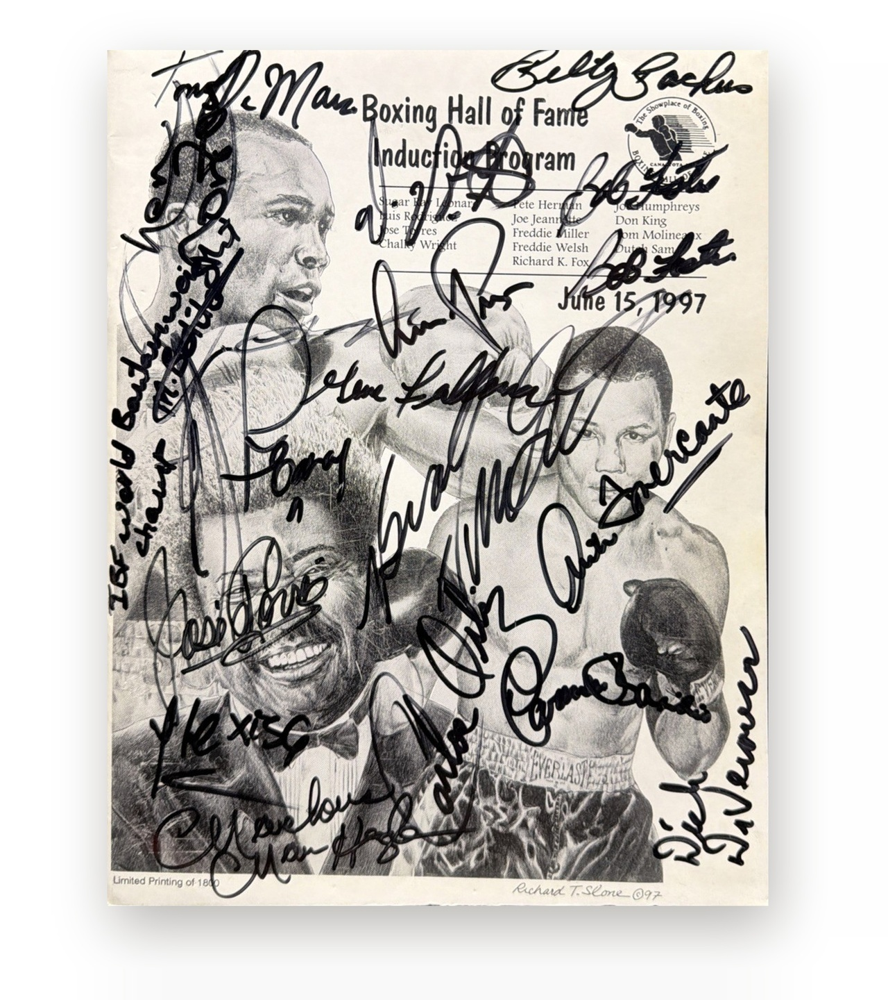
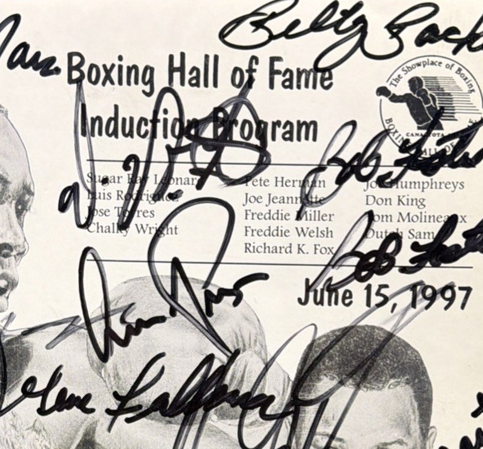
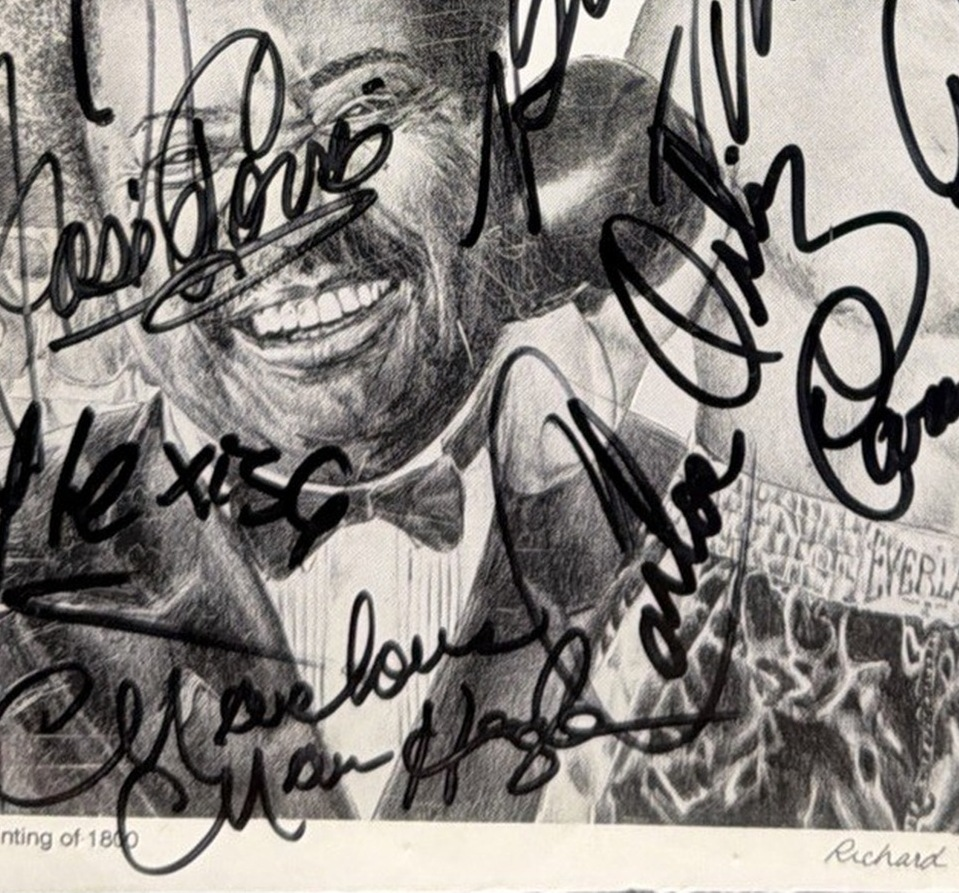
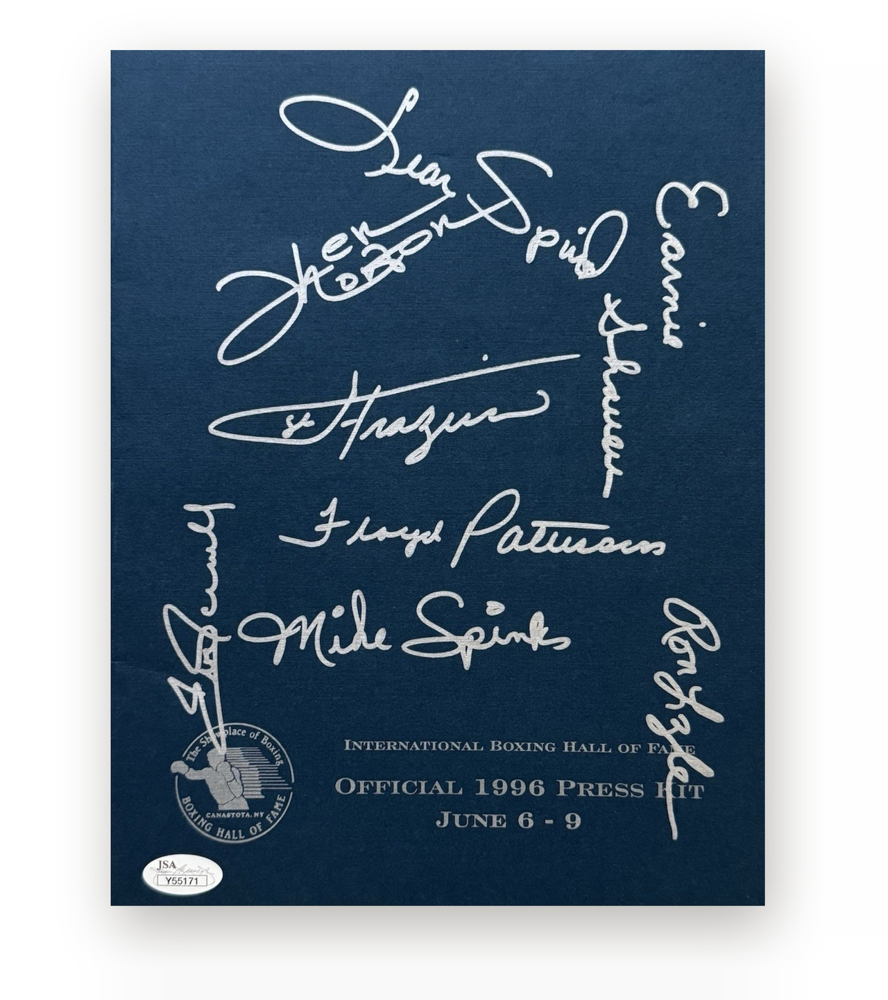
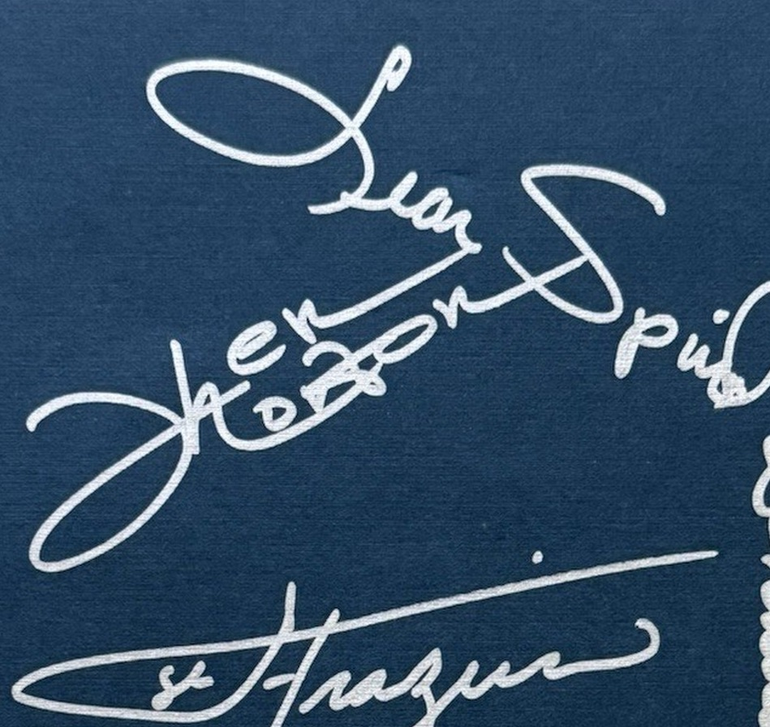
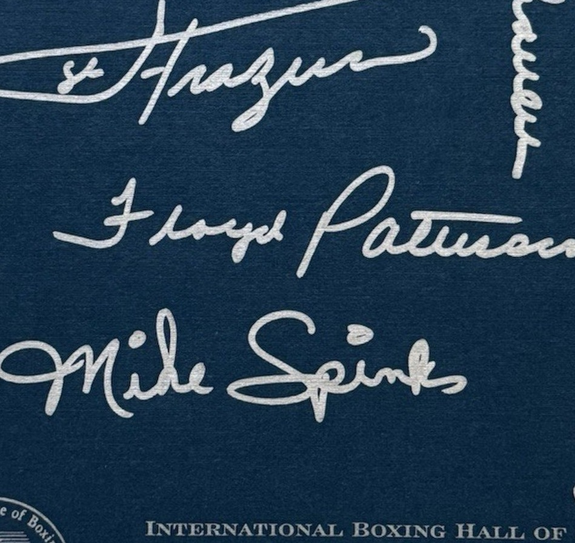

Частное собрание · Бокс
Зал боксёрской
славы
Три предмета из Канастоты: программы церемоний 1996 и 1997 годов и официальный пресс-кит, подписанный соперниками Мохаммеда Али.
3 предмета · август 2026
41
автограф на двух программах — от Арчи Мура и Флойда Паттерсона до Марвина Хаглера.
Плюс папка для прессы с именами Фрейзера, Нортона и Леона Спинкса.
Церемонии в Канастоте
Две программы,
сорок один автограф
Июньские церемонии 1996 и 1997 годов: чемпионы расписывались на программах прямо в зале.
9 июня 1996
тираж 1200 экземпляров · 22 автографа
15 июня 1997
тираж 1800 экземпляров · 19 автографов

Церемонии в Канастоте · 1 из 2
Программа церемонии Международного зала боксёрской славы, 9 июня 1996 года, 22 автографа
Канастота, штат Нью-Йорк · 9 июня 1996
Раз в году Канастота собирает весь бокс: чемпионы приезжают на церемонию лично, и застать их вместе можно только там. Программа того июньского дня вышла тиражом 1200 экземпляров.
Двадцать два росчерка поверх печати. Арчи Мур, тренировавший юного Кассиуса Клея и позже вышедший против него на ринг. Флойд Паттерсон, первый в истории, кто вернул себе корону тяжеловесов. Кармен Базилио, Карлос Ортис, Боб Фостер, Джин Фулмер, Джоуи Максим, Уилфред Бенитес, Джеймс «Боункрашер» Смит, Билли Бэкус. Отдельной строкой — Кристи Мартин: 1996-й был её годом.
700 000 ₽
JSA
Подписи крупно
Церемонии в Канастоте · 1 из 2


Арчи Мур · Флойд Паттерсон · Кармен Базилио · Карлос Ортис · Боб Фостер · Джин Фулмер · Джоуи Максим · Уилфред Бенитес · Джеймс «Боункрашер» Смит · Эмануэль Стюард · Кристи Мартин · Билли Бэкус · Берт Шугар
Фрагменты того же листа крупно: верх обложки и нижнее поле с датой.
Кто расписался · 1996
Кто эти люди
Арчи Мур
«Старый мангуст», рекордсмен по нокаутам за карьеру. В 1960-м тренировал юного Кассиуса Клея, в 1962-м вышел против него на ринг.
Флойд Паттерсон
Первый в истории, кто вернул себе титул чемпиона мира в тяжёлом весе. С Али дрался дважды.
Боб Фостер
Величайший полутяжеловес своего времени: четырнадцать защит титула подряд.
Кармен Базилио
Чемпион в полусреднем и среднем весе. В 1957-м обыграл Шугара Рэя Робинсона.
Эмануэль Стюард
Тренер зала Kronk в Детройте: Томас Хирнс, Леннокс Льюис, Владимир Кличко.
Кристи Мартин
1996-й — её год: женский бокс впервые вышел на главные арены и обложки.

Церемонии в Канастоте · 2 из 2
Программа церемонии Международного зала боксёрской славы, 15 июня 1997 года, 19 автографов
Канастота, штат Нью-Йорк · 15 июня 1997
В тот год в Зал вводили Шугара Рэя Леонарда, Хосе Торреса и Дона Кинга — состав напечатан прямо на обложке. Тираж программы — 1800 экземпляров, рисунок Ричарда Слоуна.
Девятнадцать подписей поверх графики. Марвин Хаглер — так, как он подписывался всегда, «Marvelous». Хосе Торрес, чемпион в полутяжёлом весе и ученик Каса Д’Амато, — в год собственного введения в Зал. Вито Антуофермо, Тони ДеМарко, Кармен Базилио, Билли Бэкус, Боб Фостер, Джин Фулмер.
600 000 ₽
JSA
Подписи крупно
Церемонии в Канастоте · 2 из 2


Марвин Хаглер · Хосе Торрес · Вито Антуофермо · Тони ДеМарко · Кармен Базилио · Билли Бэкус · Боб Фостер · Джин Фулмер
Фрагменты того же листа крупно: шапка с составом Зала славы и низ обложки.
Кто расписался · 1997
Кто эти люди
Марвин Хаглер
Безраздельный чемпион в среднем весе, двенадцать защит титула. Подписывался только «Marvelous».
Хосе Торрес
Чемпион в полутяжёлом весе, ученик Каса Д’Амато, писатель. В 1997-м сам вошёл в Зал славы.
Вито Антуофермо
Чемпион мира в среднем весе. Единственный, кто свёл вничью бой с Хаглером.
Тони ДеМарко
Чемпион мира в полусреднем весе, гордость итальянского Бостона.
Билли Бэкус
Свой в Канастоте: племянник Кармен Базилио и чемпион мира в полусреднем весе.
Джин Фулмер
Чемпион в среднем весе, четыре боя с Шугаром Рэем Робинсоном.
Соперники
Те, кто стоял
напротив Али
Пресс-кит 1996 года: серебро по тёмно-синему, имена из самых больших боёв тяжёлого веса.
6–9 июня 1996
официальная папка для прессы
Фрейзер · Нортон · Спинкс
три человека, отобравшие у Али титул или победу

Соперники
Официальный пресс-кит Международного зала боксёрской славы, 6–9 июня 1996 года, автографы соперников Мохаммеда Али
Канастота, штат Нью-Йорк · 6–9 июня 1996
Тёмно-синяя папка для прессы, серебряные росчерки по плотной бумаге. Почти каждый, кто расписался здесь, в своё время стоял напротив Мохаммеда Али.
Джо Фрейзер — три боя с Али, включая «Бой века» и «Триллер в Маниле». Кен Нортон — сломанная челюсть Али в марте 1973-го. Леон Спинкс, забравший титул в восьмом бою карьеры. Эрни Шейверс, Флойд Паттерсон, Рон Лайл. И Майкл Спинкс — брат Леона, олимпийский чемпион 1976 года.
550 000 ₽
JSA · Y55171
Подписи крупно
Соперники


Джо Фрейзер · Кен Нортон · Леон Спинкс · Эрни Шейверс · Флойд Паттерсон · Рон Лайл · Майкл Спинкс
Фрагменты той же папки крупно: верх и центр с росчерками Фрейзера и Паттерсона.
Соперники Али · кто есть кто
Кто эти люди
Джо Фрейзер
Три боя с Али. Победил в «Бою века» 1971 года — первое поражение Али в карьере.
Кен Нортон
Три боя. В марте 1973-го сломал Али челюсть и выиграл по очкам.
Леон Спинкс
В феврале 1978-го забрал у Али титул — в восьмом бою своей профессиональной карьеры.
Эрни Шейверс
Самый тяжёлый удар дивизиона. В 1977-м продержал Али все пятнадцать раундов.
Флойд Паттерсон
Дважды выходил против Али — в 1965-м и 1972-м. До того дважды чемпион мира.
Рон Лайл
Май 1975-го: вёл по очкам до одиннадцатого раунда, пока Али не остановил бой.
Майкл Спинкс
Брат Леона, олимпийское золото 1976 года. Первый полутяжеловес, ставший чемпионом в тяжёлом весе.
Как мы отдаём подарок
Упаковка Stargift

Каждый предмет уходит в фирменной упаковке дома:
крафт-бумага с автографами великих, лента Stargift и плотный подарочный пакет. Оформленную работу привозим и вешаем сами.
Собрание
Три предмета
Программа церемонии Международного зала боксёрской славы, 9 июня 1996 года, 22 автографа
700 000 ₽
Программа церемонии Международного зала боксёрской славы, 15 июня 1997 года, 19 автографов
600 000 ₽
Официальный пресс-кит Международного зала боксёрской славы, 6–9 июня 1996 года, автографы соперников Мохаммеда Али
550 000 ₽
Канастота, июнь. Один день в году, когда весь бокс расписывается в одной комнате.
stargift.ru